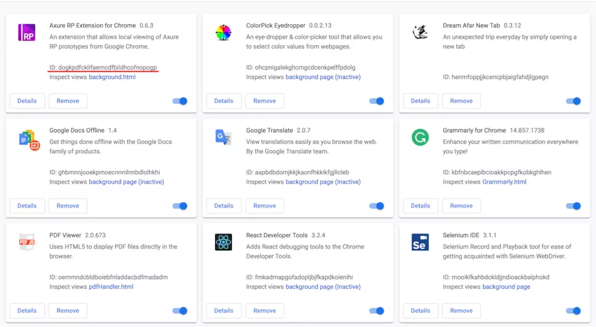
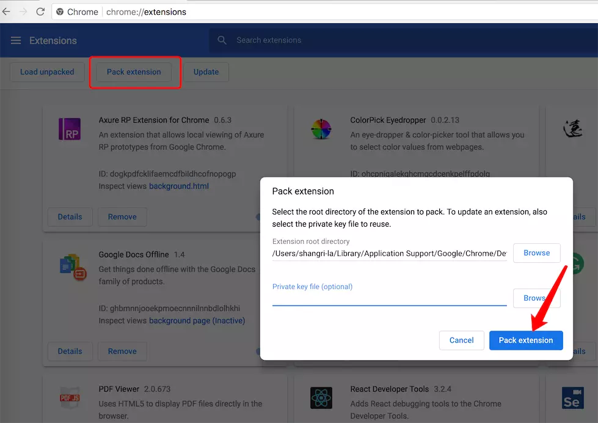
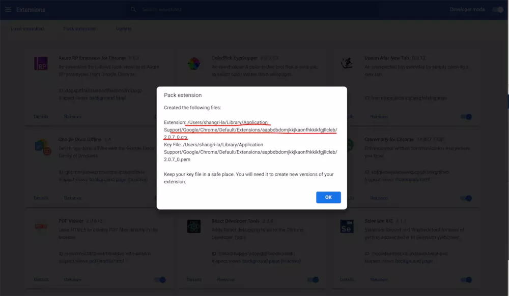
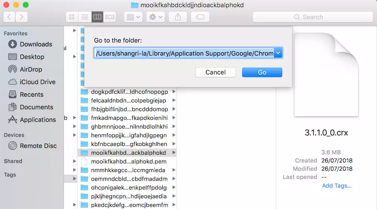
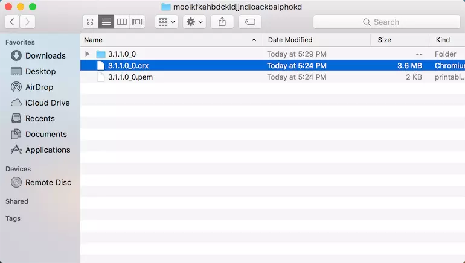
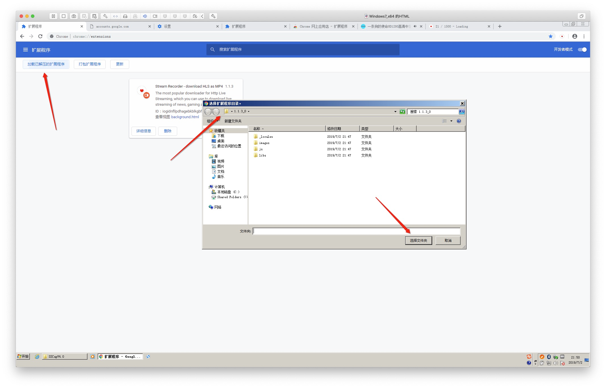

@(工作笔记)
MacOS-record
[TOC]
/hello world/
---
mds_stores是啥？那么牛逼
mds_stores直接占用92%内存，导致应用崩溃！！！！电脑业很热啊变得
kernel_task也是个神物，强制占用1.5个G的内存
请问如何解决啊，已经影响到工作了
机子是定制版Mac pro垃圾桶
系统是10.10.3
已解决 如下：
mds、mds_stores、mdworker这几个进程都是为了Spotlight索引而疯狂的，解决方案：
关闭
sudo mdutil -a -i off
打开
sudo mdutil -a -i on
MAC OS系统下BEYOND COMPARE破解方式
执行如下操作:
1.进入Beyond Compare应用程序MacOS目录下(/Applications/Beyond Compare.app/Contents/MacOS) 2.将主启动程序BCompare重命名为BCompare.real 3.在同级目录下新建一个脚本文件命名为BCompare，文件内容往下看 4.给新建的文件BCompare，授权文件执行权限
1.创建BCompare文件命令如下：
在这个脚本里面写如下代码，第一行是注明解释器，第二行是删除注册信息，第三行是启动真正的主程序。
#!/bin/bash
rm "/Users/$(whoami)/Library/Application Support/Beyond Compare/registry.dat"
"`dirname "$0"`"/BCompare.real $@
2.授权文件执行权限
chmod a+x /Applications/Beyond\ Compare.app/Contents/MacOS/BCompare
这样我们每次打开软件的时候，都会先自动删掉注册信息，也就是永久免费试用了。
"打不开/dev/vmmon" 解决办法：
"打不开/dev/vmmon" 解决办法：
和HAXM或者docker冲突，说一下mac上haxm冲突的解决办法:
1 启动vmware fushion前先卸载haxm的内核模块：sudo kextunload /Library/Extensions/intelhaxm.kext， 然后可以正常启动vmware fushion
2 要使用haxm模块时
先关闭vmwarefushion,
卸载vmmon模块sudo kextunload /Applications/VMware\ Fusion.app/Contents/Library/kexts/vmmon.kext (也可能移动到/System/Library/Extensions/vmmon.kext, 卸载用 sudo kextunload /System/Library/Extensions/vmmon.kext)
加载haxm模块 sudo kextload /Library/Extensions/intelhaxm.kext
docker冲突解决方法类似。
系统又没有加载上面的提到的模块，可以用kextstat 查看：
vmmon.kext对应的模块bundleid是com.vmware.kext.vmx86，可以在kextstat(sudo kextstat)看到如下信息：
404 0 0xffffff7f838ad000 0xf000 0xf000 com.vmware.kext.vmx86 (0582.40.40) 03552346-3760-35D0-B874-4D536DA426E5 <7 5 4 3 1>
intelhaxm.kext 对应的模块bundleid是com.intel.kext.intelhaxm，可以在kextstat(sudo kextstat)看到如下信息：
156 0 0xffffff7f838ad000 0x14000 0x14000 com.intel.kext.intelhaxm (6.0.5) 8C4C5339-F7AA-36E5-A052-3D2E7DC6DF16 <7 5 4 3 1>
一味重新安装，不是mac (*nix)解决问题的方法，那时windows上解决问题的方法。
Mac系统中如何导出chrome插件
https://www.jianshu.com/p/3b2b0a20d597
#进入扩展程序目录
cd ~/Library/Application\ Support/Google/Chrome/Default/Extensions
#查看当前目录下文件
ls
根据插件ID找到对应插件，这下就跟目录下的文件对应上了 
#进入需要导出插件目录
cd nmmhkkegccagdldgiimedpiccmgmieda
#查看
ls
#进入对应版本文件夹，pwd查看当前路径：
cd 1.0.0.3_0
#查看路径
pwd



.crx文件文件直接可以在扩展程序中使用了

简单粗暴的方法, 压缩文件夹发送给别人

XCode 升级到 XCode10.3 项目报错
https://www.xingcheng.me/2019/07/26/XCode10-3-error/
报错信息：
Failed to find or create execution context for description ‘<IBCocoaTouchPlatformToolDescription: 0x7fe0ddceada0> System content for IBCocoaTouchFramework-ElevenAndLater <IBScaleFactorDeviceTypeDescription: 0x7fe0dd8606b0> scaleFactor=2x’. These intermediate objects were non-nil: (
CompileStoryboard /Users/xingcheng/Git/XDemo/XDemo/Launch\ Screen.storyboard (in target: XDemo)
cd /Users/xingcheng/Git/XDemo
export XCODE_DEVELOPER_USR_PATH=/Applications/Xcode.app/Contents/Developer/usr/bin/..
/Applications/Xcode.app/Contents/Developer/usr/bin/ibtool --errors --warnings --notices --module XDemo --output-partial-info-plist /Users/xingcheng/Library/Developer/Xcode/DerivedData/XDemo-aeprheuvgyqhvydumnpjaqtvqwtq/Build/Intermediates.noindex/XDemo.build/Debug-iphonesimulator/XDemo.build/Launch\ Screen-SBPartialInfo.plist --auto-activate-custom-fonts --target-device iphone --target-device ipad --minimum-deployment-target 9.0 --output-format human-readable-text --compilation-directory /Users/xingcheng/Library/Developer/Xcode/DerivedData/XDemo-aeprheuvgyqhvydumnpjaqtvqwtq/Build/Intermediates.noindex/XDemo.build/Debug-iphonesimulator/XDemo.build /Users/xingcheng/Git/XDemo/XDemo/Launch\ Screen.storyboard
2019-07-26 11:15:26.166 ibtoold[35829:13410674] [MT] IBPlatformTool: *** Failed to launch tool with description <IBCocoaTouchPlatformToolDescription: 0x7fe0ddceada0> System content for IBCocoaTouchFramework-ElevenAndLater <IBScaleFactorDeviceTypeDescription: 0x7fe0dd8606b0> scaleFactor=2x: Failed to find or create execution context for description '<IBCocoaTouchPlatformToolDescription: 0x7fe0ddceada0> System content for IBCocoaTouchFramework-ElevenAndLater <IBScaleFactorDeviceTypeDescription: 0x7fe0dd8606b0> scaleFactor=2x'. These intermediate objects were non-nil: (
"IBSimDeviceTypeiPad2x (com.apple.dt.Xcode.IBSimDeviceType.iPad-2x)",
"iOS 12.4 (12.4 - 16G73) - com.apple.CoreSimulator.SimRuntime.iOS-12-4"
): Failed to find a suitable device for the type IBSimDeviceTypeiPad2x (com.apple.dt.Xcode.IBSimDeviceType.iPad-2x) with runtime iOS 12.4 (12.4 - 16G73) - com.apple.CoreSimulator.SimRuntime.iOS-12-4 (Failure reason: Failed to create new simulator device that matches IBSimDeviceTypeiPad2x (com.apple.dt.Xcode.IBSimDeviceType.iPad-2x) for runtime iOS 12.4 (12.4 - 16G73) - com.apple.CoreSimulator.SimRuntime.iOS-12-4 (Invalid runtime: com.apple.CoreSimulator.SimRuntime.iOS-12-4)): Invalid runtime: com.apple.CoreSimulator.SimRuntime.iOS-12-4
/* com.apple.ibtool.errors */
/Users/xingcheng/Git/XDemo/XDemo/Launch Screen.storyboard: error: Failed to find or create execution context for description '<IBCocoaTouchPlatformToolDescription: 0x7fe0ddceada0> System content for IBCocoaTouchFramework-ElevenAndLater <IBScaleFactorDeviceTypeDescription: 0x7fe0dd8606b0> scaleFactor=2x'. These intermediate objects were non-nil: (
"IBSimDeviceTypeiPad2x (com.apple.dt.Xcode.IBSimDeviceType.iPad-2x)",
"iOS 12.4 (12.4 - 16G73) - com.apple.CoreSimulator.SimRuntime.iOS-12-4"
)
Underlying Errors:
Description: Failed to find a suitable device for the type IBSimDeviceTypeiPad2x (com.apple.dt.Xcode.IBSimDeviceType.iPad-2x) with runtime iOS 12.4 (12.4 - 16G73) - com.apple.CoreSimulator.SimRuntime.iOS-12-4
Failure Reason: Failed to create new simulator device that matches IBSimDeviceTypeiPad2x (com.apple.dt.Xcode.IBSimDeviceType.iPad-2x) for runtime iOS 12.4 (12.4 - 16G73) - com.apple.CoreSimulator.SimRuntime.iOS-12-4 (Invalid runtime: com.apple.CoreSimulator.SimRuntime.iOS-12-4)
Underlying Errors:
Description: Invalid runtime: com.apple.CoreSimulator.SimRuntime.iOS-12-4
解决方法： Kill all simulator processes
sudo killall -9 com.apple.CoreSimulator.CoreSimulatorService
Set the correct Xcode path
sudo xcode-select -s /Applications/Xcode.app/Contents/Developer
If that doesn’t work, reset all simulators
xcrun simctl erase all
关于Mac共享WiFi网络，看这里就够了(2.4G，5G ， ipv6)
https://www.jianshu.com/p/7a3d3005b0c9
Option + E不起作用
最近，当我按Option + e时，我的Macbook停止显示´。我什至无法在键盘查看器中按´。
其他的口音工作正常。
任何人有解决此问题的想法？是否可以在Mac上重置所有快捷方式？
解决办法 我的设置从美国键盘更改为Unicode十六进制输入。将其更改回固定我的选项键
MacOS Catalina Alfred出现相同的apps
https://wuzhuti.cn/macos-catalina-alfred-multiple-apps
今天更新完MacOS Catalina后，alfred运行应用程序时，同一个app出现在不同两个目录“/System/Volumes/Data/Applications” 和 “/Applications”
解决方法
在 alfred中输入reload 即可。
如何在mac版本的python里安装pip？
mac里面python自带easy_install的，最快的应该就是在terminal里面sudo easy_install pip了，网络好几秒就ok。运行完可以用pip help测试一下是否安装成功，成功安装后，直接pip install numpy或者其他包就可以了。
ps：用sudo的时候需要输入密码，这个密码是你自己电脑的密码，输入的时候采取了“保密措施”，你看不到自己输入的字符，完整的输入进去以后，回车就可以了。